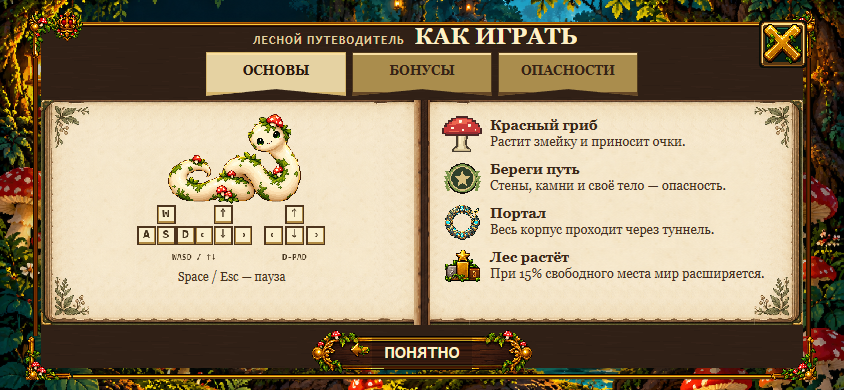
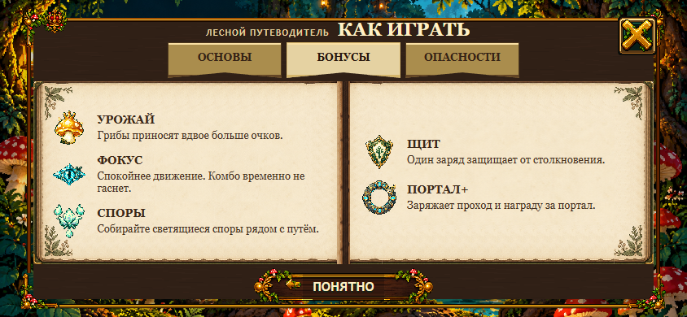
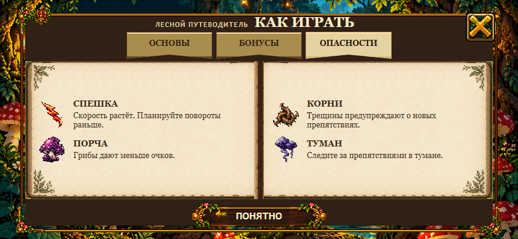

Компоненты V4 сохранены. Слева — текущий опубликованный V4 до коррекции; справа — V4.1. Native fixtures используют ту же каноническую игру; LIVE-подтверждение находится в QA. Это кандидат для HUMAN VISUAL REVIEW, не художественное одобрение.
Отдельный мусорный fragment17px удалён. Основные953 пикселя гриба byte-identical. Измерения — в raster-metrics.json; это не переоформление гриба.


